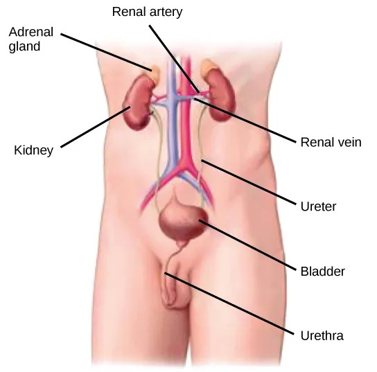
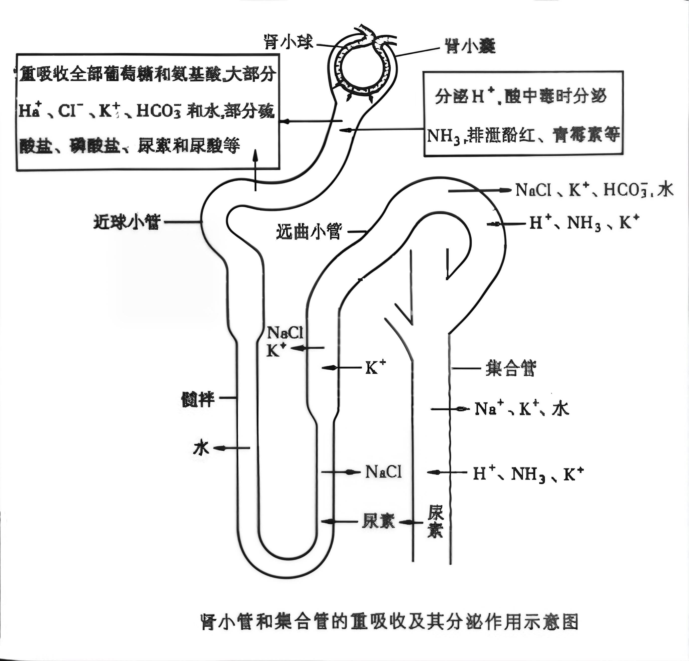
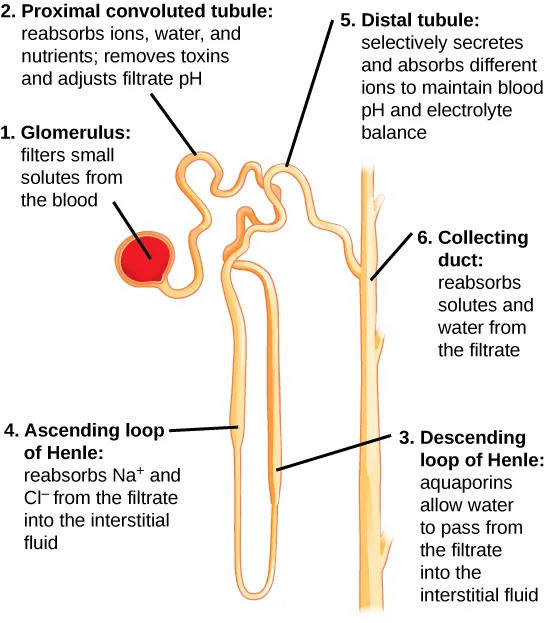
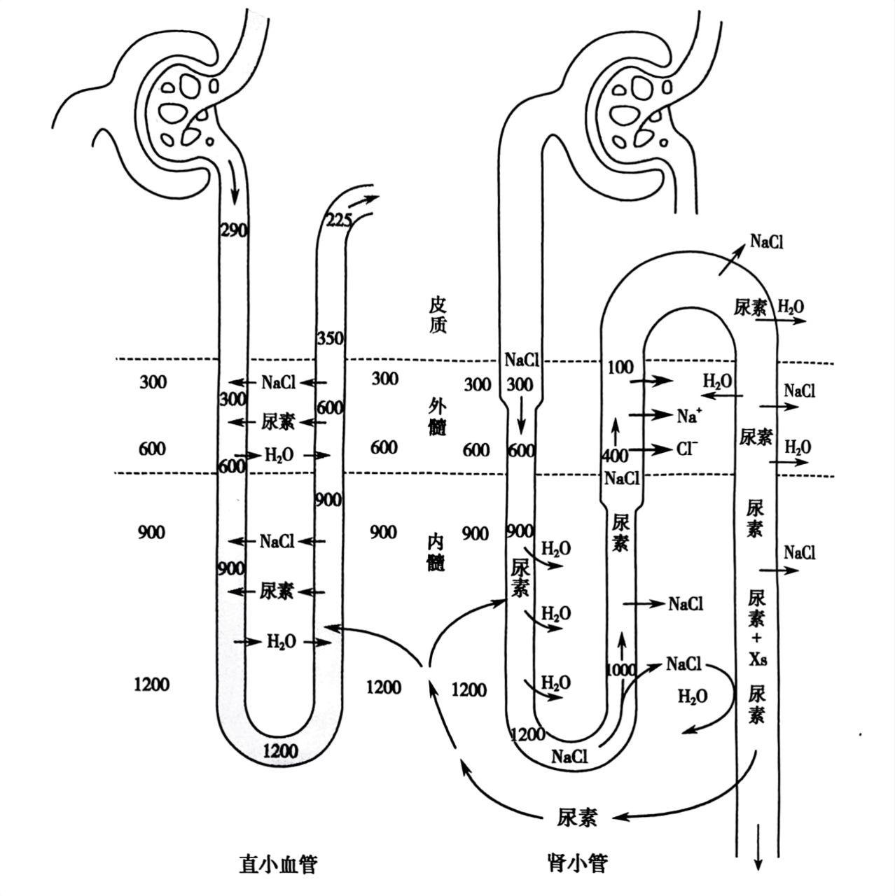

1. 肾单位 = 肾小体（肾小球 + 肾小囊）+ 肾小管（近端小管 + 细段 + 远端小管）。肾单位是肾脏的结构和功能基本单位。
肾小球滤过屏障（三层）：有孔内皮（50～100nm）→ 基膜 → 裂孔隔膜（足细胞间约25nm裂孔）。受损→蛋白尿或血尿。
肾血循环特点：入球小动脉比出球小动脉粗 → 肾小球内保持较高滤过压。两次毛细血管网（肾小球毛细血管 + 球后毛细血管网），后者胶体渗透压高，利于重吸收。



2. 尿液形成过程：
- 滤过作用（肾小体）：有效滤过压 = 肾小球内血压 -（血浆胶体渗透压 + 囊内压）。无须消耗ATP。
- 重吸收作用（主要近曲小管）：水65%～70%、Na⁺65%～70%、葡萄糖和氨基酸100%主动吸收
- 分泌作用（主要远曲小管）：K⁺、NH₄⁺、H⁺及HCO₃⁻等分泌到滤出液中。受醛固酮促进（保Na⁺排K⁺）。
- 浓缩作用（集合管）：受抗利尿激素（ADH）调节，促进水通道蛋白整合到膜上

逆流系统学说（解释尿液浓缩）：
- 逆流倍增机制（髓袢）：升支透Na⁺不透水，降支透水 → 形成Na⁺浓度梯度。髓袢越长，浓缩能力越强（沙漠跳鼠尿渗透浓度可达血浆25倍）。
- 逆流交换机制（直小血管）：带走吸收的水分，维持髓质高渗。
成人每天产生约125L原尿，经过浓缩后大约只产生1.5L终尿（仅占原尿的1%左右）。体积浓缩约83倍是指终尿体积仅为原尿的约1/83；但尿渗透压约为血浆的4～5倍（最大可达4～5倍），与"体积浓缩倍数"含义不同——原尿（近似血浆渗透压）中大量水分被重吸收，而溶质在逆流倍增机制下被高度浓缩。

尿液形成四步：
滤过（肾小体）→ 重吸收（近曲小管）→ 分泌（远曲小管）→ 浓缩（集合管）
125L原尿 → 1.5L终尿，体积浓缩约83倍；尿渗透压约为血浆4～5倍
体积浓缩倍数 ≠ 渗透压浓缩倍数；逆流倍增是理解尿液浓缩的关键！
滤过（肾小体）→ 重吸收（近曲小管）→ 分泌（远曲小管）→ 浓缩（集合管）
125L原尿 → 1.5L终尿，体积浓缩约83倍；尿渗透压约为血浆4～5倍
体积浓缩倍数 ≠ 渗透压浓缩倍数；逆流倍增是理解尿液浓缩的关键！